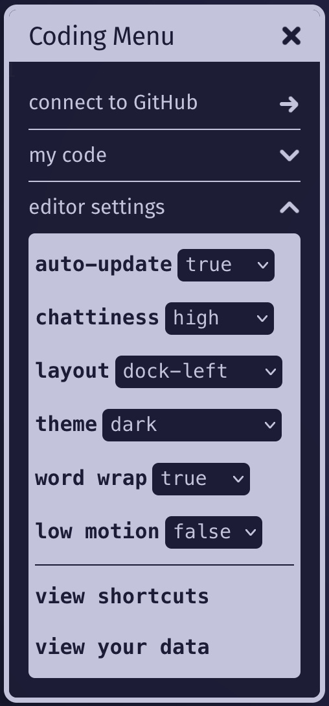
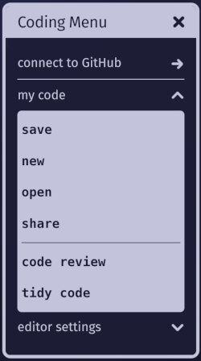

As explained in the introduction page for students (review that first if you haven't), netnet.studio is an interactive learning platform (see Learning Guide for more on that) where you learn not only by reading docs or watching videos but by making. That's why it's also designed to act as a web-coding sketchbook, if you have an idea, the goal is to get you into a live editor with minimal friction so you can capture it in code before it’s lost. The basic ideas are covered in introduction page, here we'll get into the details of the Coding Menu as well as the difference between working on a sketch (a single HTML file) vs working on a project (a GitHub "repo" you can publish online).
 The Coding Menu
The Coding MenuYou can open the Coding Menu anytime by clicking on netnet's face and selecting it from the main menu. It has a couple of sub-menus, like the editor settings, where you can adjust some of netnet's code editor details like:

The my code sub-menu contains options for the code your working on:

When writing your own code in netnet, you're always working on either a sketch or a project:
A sketch is a single HTML file in netnet.studio. Because HTML is a polyglot format (allowing you to mix HTML, CSS, JavaScript, and other languages) you can do a lot within one file (for example, all of netnet’s "demos" are single-file sketches). To save a sketch, press CTRL+S (or CMD+S on Mac). netnet will prompt you to either download your sketch (as an HTML file) or share it (as a netnet URL).
A project is a full website that can include multiple HTML files, code files (CSS, JS, etc.), and other assets such as images, audio, video, or fonts. Projects are "versioned", meaning you can create save points as you work. They’re stored as repositories ("repos") in your personal GitHub account, which allows netnet to use Git for version control and GitHub’s free web hosting when you’re ready to publish your work to the Web. You don’t need to interact with Git or GitHub directly, netnet handles that for you, but since your code lives entirely on GitHub (never on our servers), you’re never locked in and can switch to another editor anytime.
To work on a project (a GitHub repository), first connect netnet to your GitHub account by pressing Connect to GitHub in the Coding Menu. If you don’t have an account, you can create one for free. Don’t worry if you’re new to GitHub, netnet introduces the basic Git concepts and manages the technical details for you.
When working on a project, netnet will display the path of the file you're currently working in on the top of it's editor. Next to that you'll find a Files button, clicking on this opens the Project Files widget, where you can upload, create and edit new folders/files.
Clicking on a folder will toggle (open/close) it's contents, clicking on a file will open that file in the editor. If the file is a media asset (like an image or video) it will open it in a separate widget. If you click on an HTML file specifically you will notice that it gets a label "rendering" placed beside it, this indicates which file is currently being rendered in netnet's output.
Right-clicking on a file or folder gives you the following options:
When working on files in a project, netnet won't render the output until you save your changes locally. In the video above a CSS file is selected from the Project Files widget (instead of pressing the X, the widget is closed by hitting the Esc key, which can be quicker). After editing the CSS file a yellow dot appears next to the file name at the top of the editor. This indicates a change has been made that has not yet been saved locally. Once saved (either by clicking Coding Menu > my code > save, or in this case pressing Ctrl+S, or CMD+S on Mac) the dot will disappear, indicating the changes have been saved locally and the rendered output should update.
Changes to a file (as well as creating or deleting a file) are saved "locally", meaning that they're stored temporarily in your browser as you work. The Project Files widget will color code any changed files: green for new files and yellow for edited files. The colors help you identify which parts of your project includes changes not yet backed up to GitHub.
In order to back up those changes you'll need to "commit" them to your GitHub repo. A commit is like a save point in your project's timeline. You can commit changes by pressing the  button in the Project Files widget and choosing the git push option.
button in the Project Files widget and choosing the git push option.
netnet will give you the option to either have it create and push the commit for you or you can learn to use git yourself with netnet guiding you through the manual commit process using the Version Control widget.
This widget will walk you through the process of creating a new "commit" (a versioned "save point") and pushing (aka uploading) that to your GitHub repository. It has a terminal which displays the actual git commands you would have to run if you were working in any terminal, except that rather than typing the terminal commands yourself, netnet will write them for you and walk through it step by step. If you're new to version control it's worth reading the netnet passages to better understand what's going on at each step.
PRO TIP: Once you get the hang of it, you can speed run the process by pressing, Enter > Enter > typing your commit message > Enter > Enter > Enter
When you're ready to publish your project to the World Wide Web you can click on netnet's face to open the main menu, then Coding Menu > my code > share, netnet explains that it will use the "ghpages" service provided by GitHub to launch a web server on GitHub for your project. It then generates a publicly accessible URL you can share with anyone, your work is now live on the Web!
Once you publish a project you don't ever need to re-publish it, every time you make a new commit your live website gets updated as well (NOTE: as netnet explains, it does take a minute or two before you see those updates on the published website).